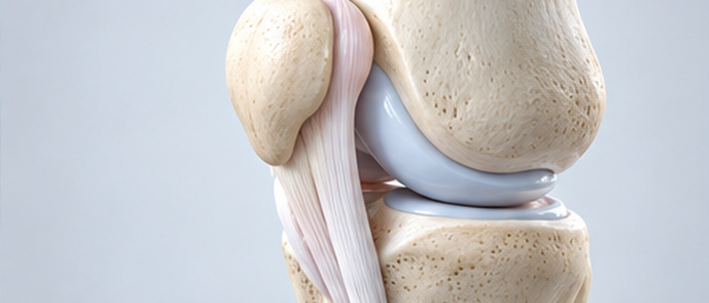
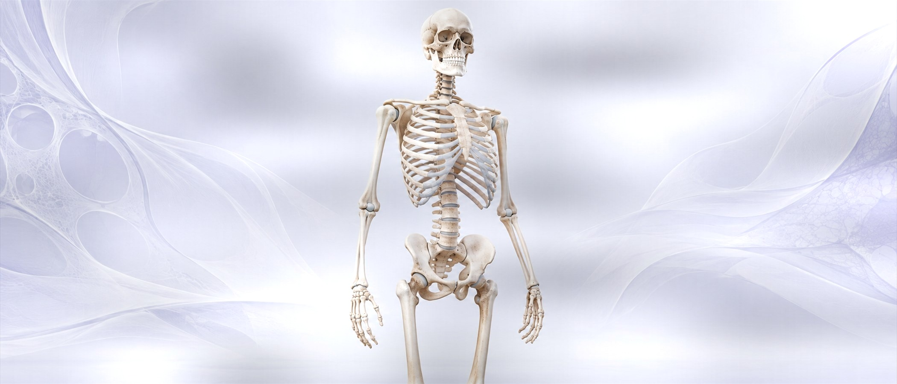
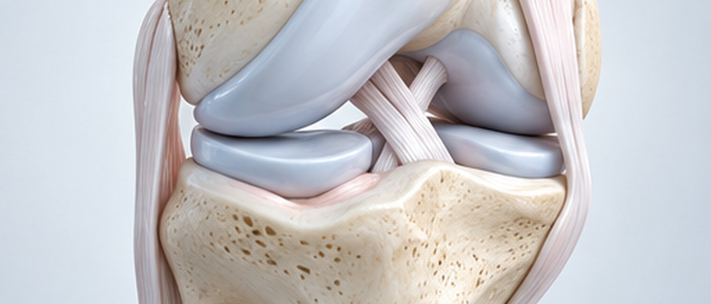
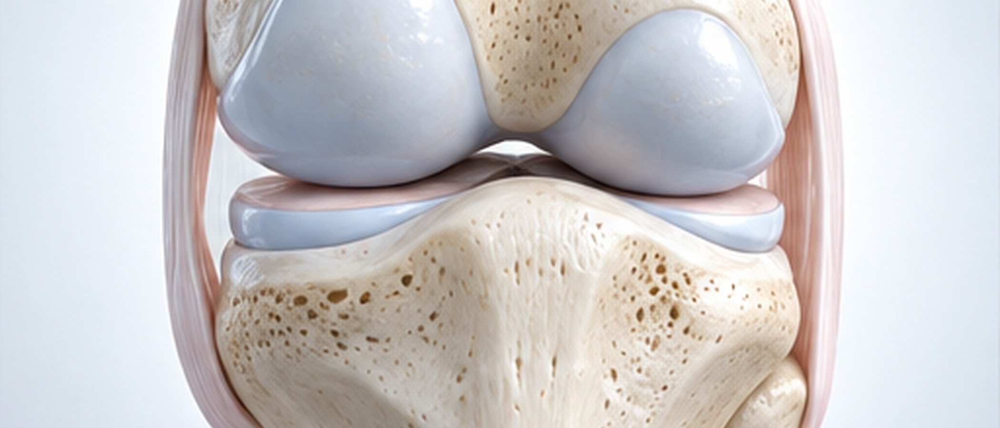
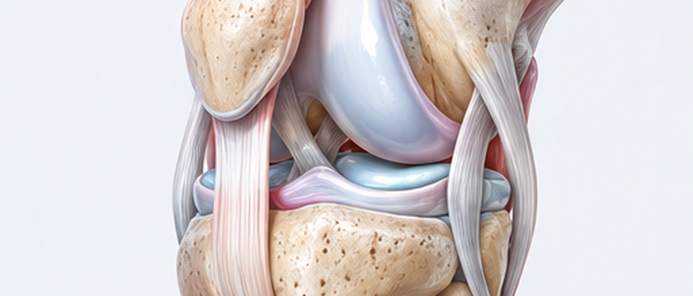
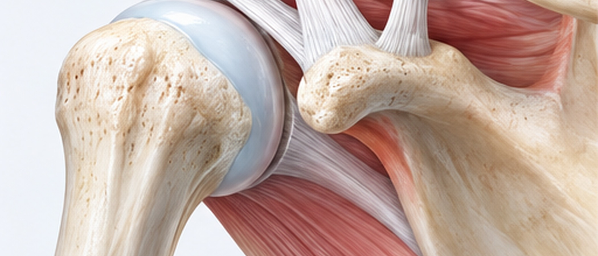
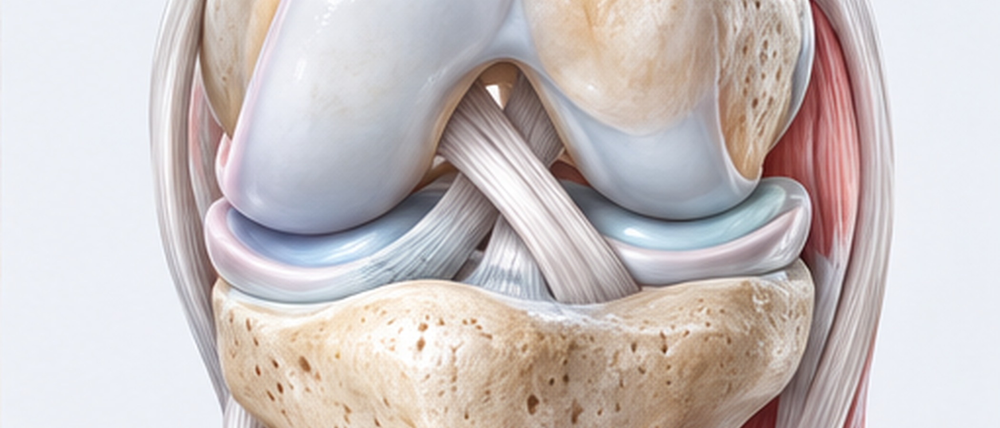
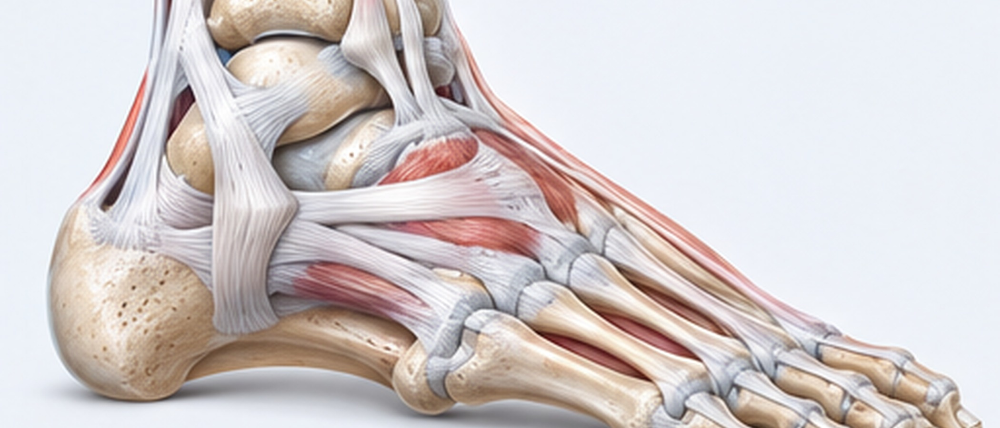
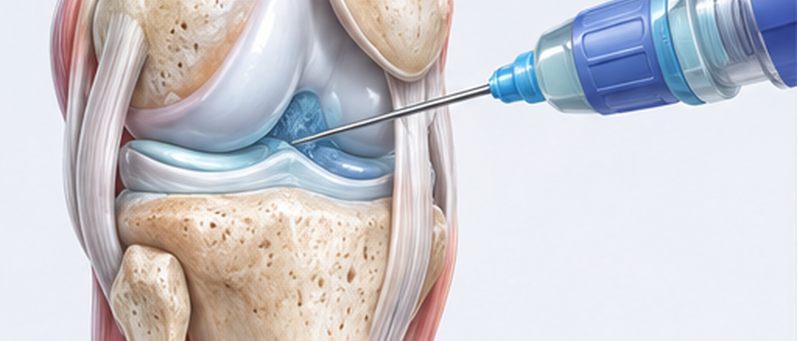

BAREUNSUP’s Orthopedic Surgical Treatment
통증이 생긴 원인을 정확히 찾아 치료하고,
빨리, 안전하게 일상으로 돌아가는 수술을 합니다.
관절 통증을 잠깐 줄이는 데서 멈추지 않고, 아픔을 일으키는 관절 구조의 문제를 정확히 찾아내 치료합니다.
환자마다 다른 관절 상태와 움직임을 충분히 따져 보고, 통증을 줄이는 것은 물론 오랫동안 기능을 되찾고 편하게 생활하시도록 함께 살핍니다.
인공관절치환술
인공관절치환술
망가진 관절을 들어내고 인공관절로 바꿔 넣어 통증을 줄이고 움직임을 되찾게 하는 수술입니다.
관절염이 심하거나 관절이 크게 상한 분이 덜 아프고 더 편하게 생활하도록 하는 것이 목표입니다.

특징

관절 기능 회복

보행 능력 향상
치료방법
휜다리교정술
휜다리교정술
다리의 축을 바로잡아 관절 한쪽에 몰리던 무게를 고르게 나누는 수술입니다.
무릎 한쪽에 쏠리던 무게를 덜어 관절염이 더디게 진행되도록 하는 것이 목표입니다.

특징

관절 보존 치료
치료방법
관절내시경
관절내시경
작게 절개한 틈으로 내시경을 넣어 관절 안을 직접 보면서 치료하는 최소침습 수술입니다.
검사와 치료를 한자리에서 끝낼 수 있고, 몸이 빨리 회복되는 것이 장점입니다.

특징
치료방법
연골판절제술/봉합술
연골판절제술/봉합술
다친 반월상연골을 잘라 내거나 꿰매서 관절이 제 기능을 되찾게 하는 수술입니다.
연골은 되도록 덜 다치게 하면서 통증을 줄이는 것이 목표입니다.

특징

맞춤 치료 가능
치료방법
십자인대재건술
십자인대재건술
끊어진 십자인대를 다른 조직으로 새로 만들어 무릎이 흔들리지 않게 하는 수술입니다.
다시 운동을 하려는 분께 꼭 필요한 치료입니다.

특징
치료방법
회전근개봉합술
회전근개봉합술
찢어진 어깨 회전근개를 꿰매어 어깨 기능을 되찾는 수술입니다.
어깨 통증을 덜고 움직이는 범위를 넓히는 것이 목표입니다.

특징

어깨 기능 개선
치료방법
방카르트봉합술
방카르트봉합술
어깨가 빠지면서 다친 관절순을 꿰매서 관절이 흔들리지 않게 하는 수술입니다.
어깨가 또 빠지는 것을 막는 데 큰 몫을 합니다.

특징

탈구 재발 방지
치료방법
무지외반교정절골술
무지외반교정절골술
휘어진 엄지발가락 뼈를 잘라서 바르게 줄을 맞추는 수술입니다.
통증을 줄이고 발 기능을 되찾는 것이 목표입니다.

특징
치료방법
발목인대재건술
발목인대재건술
다치거나 늘어난 발목 인대를 새로 만들어 발목 관절이 흔들리지 않게 하는 수술입니다.
발목을 자꾸 삐어서 늘 불안정한 상태가 되었을 때, 통증을 줄이고 다시 삐지 않도록 하기 위해 합니다.

특징
치료방법
통증만 잡는 데 그치지 않고 관절을 지키는 치료를 합니다.
지금 증상만 보지 않고, 오랜 진료 경험을 바탕으로 관절 상태와 기능을
꼼꼼히 따져 보고 차근차근 치료합니다.
관절 수술 뒤에 재활치료는 왜 해야 하나요?
수술만 받는다고 관절 기능이 다 돌아오는 것은 아닙니다.
굳은 관절을 부드럽게 풀고 약해진 근육의 힘을 되찾는 과정도 함께 거쳐야 합니다.
재활을 건너뛰면 관절이 굳은 채로 남거나 통증이 쉽게 가시지 않습니다.
수술을 마친 뒤 회복하는 기간까지 의료진이 함께 챙겨야 합니다.
인공관절을 넣고 나면 무릎 꿇기는 어렵나요?
수술 뒤에도 평소 생활은 할 수 있지만, 깊이 쪼그려 앉거나 오랫동안 무릎을 꿇고 있는 자세는 불편할 수 있습니다.
인공관절의 구조와 수술 뒤 관절이 움직이는 범위에 한계가 있기 때문입니다.
인공관절 수술 뒤에는 언제부터 걷나요?
대개 수술 이튿날부터 걷는 연습을 시작합니다.
처음에는 보행 보조기를 쓰기도 하고, 차츰 단계를 높여 가며 회복합니다.
브로스트롬 수술 뒤 운동은 언제 할 수 있나요?
처음에는 발목을 보호하며 고정하는 기간을 두고, 그 뒤 차근차근 걷기와 움직이는 범위를 늘립니다.
운동을 다시 시작하는 시기는 인대가 아문 정도와 재활 경과에 따라 다릅니다.
무지외반증은 하이힐 탓에만 생기나요?
볼이 좁은 신발이나 하이힐이 원인 가운데 하나일 수는 있지만, 전부는 아닙니다.
타고난 발 모양과 평발, 관절이 늘어선 모양 같은 여러 원인이 함께 작용할 수 있습니다.
초기에는 신발을 바꾸고 보조기를 써서 증상을 줄여 보고, 많이 휘었다면 수술로 바로잡는 방법을 생각해 볼 수 있습니다.
무지외반증 수술 뒤 언제부터 걸어도 되나요?
수술 방법마다 조금씩 다르지만, 특수 신발을 신은 상태로 조금씩 걸을 수 있는 경우가 많습니다.
다만 무리하게 체중을 실으면 회복이 늦어질 수 있어서 의료진이 알려 드리는 대로 회복하셔야 합니다.
인공관절은 어느 때 넣어야 하나요?
약이나 주사로 치료해도 계속 아프고, 걷거나 계단을 오르고 잠자는 것까지 힘들 정도라면 수술을 생각해 볼 수 있습니다.
엑스레이 결과만으로 정하지 않고, 얼마나 아픈지와 생활이 얼마나 불편한지를 함께 보고 결정합니다.
발목인대를 수술한 뒤에도 또 삘 수 있나요?
수술 뒤에도 무리하게 운동하거나 재활이 모자라면 다시 다칠 수 있습니다.
그래서 근력과 균형 감각을 되찾는 재활치료가 무척 중요합니다.
발목 바깥 인대를 꿰매는 브로스트롬 수술이란?
늘어나거나 다친 발목 바깥쪽 인대를 꿰매서 발목을 단단히 잡아 주는 수술입니다.
발목을 자꾸 삐어서 늘 불안정해진 경우에 하며, 발목이 툭하면 꺾이는 증상을 줄이는 데 도움이 됩니다.
발목을 자주 삐는 건 원래 약해서 그런 건가요?
발목을 자꾸 삔다면 인대가 늘어나거나 다쳤을 가능성이 있습니다.
그저 “발목이 약해서”가 아니라, 발목이 늘 불안정한 만성 발목 불안정증이 된 상태일 수 있습니다.
이대로 두면 작은 충격에도 발목이 쉽게 꺾이고, 연골이 상할 위험도 커집니다.
십자인대 수술 뒤 재활은 왜 해야 하나요?
새로 만든 인대가 자리 잡고 무릎 기능이 돌아오려면 단계별 재활을 거쳐야 합니다.
근력과 균형 감각이 충분히 돌아오지 않으면 다시 다칠 위험이 높아집니다.
전방십자인대 수술 뒤 다시 운동할 수 있나요?
재활치료를 충분히 받으면 다시 운동할 수 있습니다.
다만 방향을 자주 바꾸거나 점프가 많은 운동은 인대와 근력이 충분히 회복된 다음에 다시 시작하시는 것이 좋습니다.
전방십자인대재건술은 어떤 순서로 하나요?
끊어진 인대를 걷어 낸 뒤 자가건이나 동종건으로 새 인대를 만들어 넣는 방식으로 수술합니다.
관절내시경으로 작게 절개해서 하는 경우가 많으며, 무릎이 흔들리지 않게 되찾는 것이 목표입니다.
끊어진 십자인대, 수술 말고는 방법이 없나요?
십자인대를 다쳤다고 모두 수술해야 하는 것은 아닙니다.
주로 일상생활만 하신다면 재활치료와 근력 운동으로 증상을 조절하기도 합니다.
하지만 운동을 많이 하시거나 무릎이 자꾸 꺾이고 흔들린다면 인대를 새로 만드는 재건술이 필요할 수 있습니다.
나이와 활동량, 무릎이 흔들리는 정도를 두루 따져 보고 어떻게 치료할지 정합니다.
인체유래 콜라겐을 넣으면 무엇이 좋아지나요?
다친 연골이나 조직이 회복되기 좋은 환경을 만들려고 씁니다.
관절 속 환경을 좋게 하고 조직이 다시 자라는 것을 돕는 데 쓰이며, 상태에 따라 다른 치료와 함께 하기도 합니다.
줄기세포로 하는 연골 치료는 어떤 치료인가요?
다친 연골 자리가 잘 회복되도록 줄기세포를 써서 돕는 치료입니다.
요즘은 제대혈에서 얻은 줄기세포나 자기 몸의 줄기세포를 써서 치료하기도 합니다.
다만 관절염이 있다고 모두 받을 수 있는 것은 아니어서, 연골 상태와 적응증을 따져 봐야 합니다.
어떤 분에게 무릎 관절연골 재생술을 권하나요?
연골이 한 곳만 다쳤거나 관절 손상이 아직 이른 단계일 때 생각해 볼 수 있습니다.
특히 활동량이 많고 내 관절을 되도록 오래 지키고 싶은 분들이 많이 받으십니다.
나이와 연골이 다친 범위, 다리 축의 상태를 두루 살펴서 할지를 정합니다.
닳아 버린 무릎 연골은 다시 생길 수 없나요?
관절 연골은 스스로 회복하는 힘이 약한 조직입니다.
다만 연골이 다친 정도와 상태를 보고 연골 재생을 돕는 치료를 해 볼 수 있습니다.
요즘은 줄기세포나 인체유래 콜라겐 같은 재료로 연골 재생을 돕는 치료도 하고 있습니다.
회전근개를 꿰매고 나서 팔은 언제부터 써도 되나요?
처음에는 꿰맨 자리를 보호하기 위해 한동안 보조기를 차고 지내셔야 합니다.
그다음 수동운동에서 능동운동, 근력운동 순서로 차근차근 재활을 해 나갑니다.
힘줄이 찢어진 크기와 상태에 따라 낫는 속도가 사람마다 다릅니다.
회전근개를 꿰맨 뒤 또 찢어지기도 하나요?
회전근개는 피가 많이 돌지 않는 조직이라, 회복하는 동안 다시 찢어질 가능성이 아예 없지는 않습니다.
특히 팔을 무리하게 쓰거나 너무 일찍 운동하면 다시 다칠 위험이 커집니다.
수술 뒤에는 보호대를 잘 차고 재활치료를 충분히 받으셔야 합니다.
콜라겐 패치로 회전근개를 덧대는 수술이란?
회전근개를 꿰맨 뒤 힘줄 위에 콜라겐 패치를 덧대어 조직이 잘 회복되도록 돕는 치료입니다.
꿰맨 자리에 실리는 부담을 덜고, 회복이 잘되도록 돕기 위해 합니다.
특히 힘줄이 약하거나 다시 찢어질 위험이 크다면 함께 하는 것을 고려합니다.
어깨가 아픈데 오십견인지 회전근개파열인지 헷갈려요.
두 질환은 증상이 비슷해서 헷갈리시는 분이 많습니다.
오십견은 관절이 굳어서 움직일 수 있는 범위 자체가 줄어드는 질환이고, 회전근개파열은 힘줄이 다쳐서 아프고 힘이 빠지는 경우가 많습니다.
특히 밤에 많이 아프거나 어떤 방향으로 팔을 들 때 힘이 빠진다면 회전근개파열인지도 살펴봐야 합니다.
둘을 정확히 가려내려면 초음파나 MRI 검사가 도움이 됩니다.
회전근개봉합술은 어떤 경우에 받아야 하나요?
조금 찢어진 경우는 비수술 치료로 나아지기도 하지만, 힘줄이 크게 찢어졌거나 통증과 힘 빠짐이 심하다면 꿰매는 수술이 필요할 수 있습니다.
특히 팔을 들기 힘들거나 밤에 아파서 잠을 제대로 못 잘 정도라면 수술을 생각해 보기도 합니다.
찢어진 범위가 넓어질수록 회복이 어려워질 수 있어 치료할 때를 놓치지 않는 것이 좋습니다.
운동을 안 해도 회전근개가 찢어지나요?
운동을 하지 않는 분에게도 생길 수 있습니다.
어깨 힘줄은 나이가 들면서 닳아 약해질 수 있어서, 평소 하는 동작을 하다가도 찢어질 수 있습니다.
밤마다 통증이 심해지거나 팔이 잘 올라가지 않는다면 회전근개에 문제가 있는지 살펴봐야 합니다.
제때 치료하지 않으면 힘줄이 찢어진 곳이 갈수록 커질 수 있습니다.
무릎을 움직일 때 뚝딱 소리가 나요. 연골이 상한 걸까요?
관절에서 소리가 난다고 꼭 연골이 다친 것은 아닙니다.
힘줄이나 인대가 움직이면서 나는 자연스러운 소리일 수도 있습니다.
하지만 통증이나 붓기, 무언가 걸리는 느낌이 함께 있다면 연골이나 반월상연골이 다쳤는지 확인해 보시는 것이 좋습니다.
특히 계단을 오르내리거나 쪼그려 앉을 때마다 아프다면 진료를 받아 보세요.
내시경으로 관절 수술을 하면 흉터가 클까요?
관절내시경은 몇 mm 크기의 구멍으로 들어가는 최소침습 수술입니다.
절개하는 범위가 비교적 작아서 흉터 걱정이 적고, 둘레 조직도 덜 다치게 할 수 있습니다.
몸이 비교적 빨리 회복되는 편이어서 생활로 일찍 돌아가시는 분이 많습니다.
질환 상태에 따라 얼마나 수술할지, 회복에 얼마나 걸릴지는 달라집니다.
무릎 통증은 모두 관절염 때문인가요?
무릎이 아프다고 모두 관절염인 것은 아닙니다.
반월상연골이나 인대가 다쳤거나 추벽증후군이나 힘줄염, 연골 손상이 있어도 무릎이 아플 수 있습니다.
계단을 내려갈 때만 아프다든지 어떤 자세에서만 통증이 온다면 관절염이 아닌 다른 원인도 함께 확인해 봐야 합니다.
정확한 원인을 찾으려면 증상만 보지 않고 진찰과 영상검사 결과를 함께 살펴봐야 합니다.